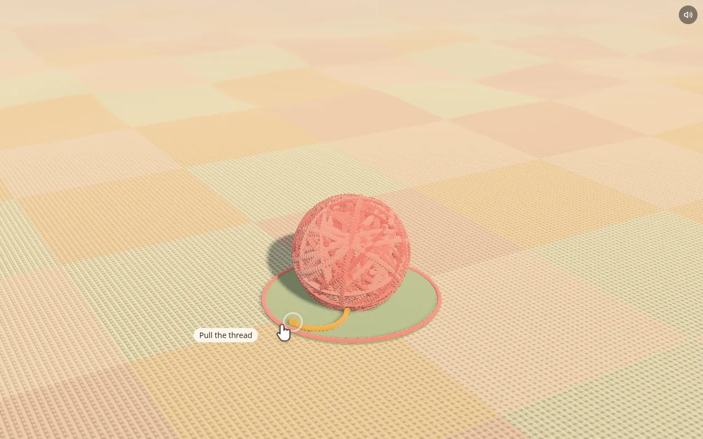
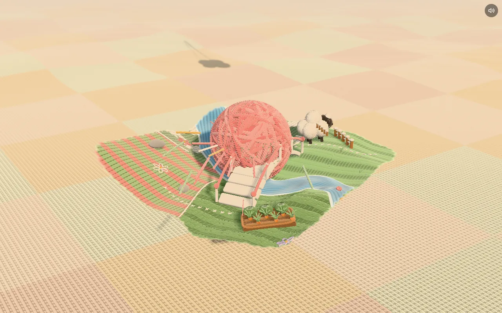

是什么
Yarn World 是一个能在浏览器里玩的毛线微缩小岛，用 three.js 写成。岛上的东西全是毛线、毛毡和绒球：地面是拼布被子，河是一条针织带子，羊是一团羊毛。打开时只有一个毛线球，拉线就把整座岛“织”出来；拉被子边上的线头，又全部拆回毛线球。
整个场景不加载任何图片纹理：针织纹理在启动时程序化生成。这是一个偏手工艺、偏“治愈系”的网页玩具，也是一份不错的 three.js 程序化材质与小型物理的参考实现。

仓库快照（2026-11-03 12:52 UTC+8 核）
| 项 | 值 |
|---|---|
| Star / Fork | 1 / 1 |
| 创建 / 最近推送 | 2026-11-01 14:06 / 14:27（UTC+8） |
| 提交 | 4 次，均在 11-01 14:06–14:25（UTC+8）；首个提交一次性导入全部代码，提交者显示为 Ryan-yang125 |
| 规模 | src/ 28 个 JS 文件，约 1.45 万行；依赖 three、three-mesh-bvh、vite |
| 许可 | 代码 MIT；音效 CC0（freesound.org，清单见 public/sfx/SOURCES.txt） |
怎么玩
- 拉线：拖动毛线球上的线，球从垫子上升起，被子从中心向外长出，岛上每样东西从球里飞到自己的位置。
- 拉线头：拖动垫子边上的线头，一切拆回毛线球。
- 拖动旋转视角，滚轮缩放。
- 戳任何东西：小屋开门敲门、风筝翻圈、风车转、菜园里蹦出胡萝卜、鸟飞走、水车溅水。
- 拎起一只羊再放下；拉羊背上的线能把羊毛拆掉，羊会害羞地跑开，羊毛慢慢长回来。
- 快捷键：
R重播开场，M静音。

技术拆解
- 程序化针织材质：平针、罗纹、起伏针、桂花针、麻花针在启动时画成高度场，再转成法线、AO 和粗糙度贴图。本站在源码里没搜到任何图片加载调用，和“不加载图片纹理”的说法一致 ✅。
- 羊毛绒（壳层渲染）：同一网格沿法线往外推、画好几层，片元着色器里用纤维遮罩留下毛茸茸的边（
fuzz.js用 InstancedMesh 实现）。 - 全岛一个风场：草、树、晾的衣服、流苏、风车、风筝、烟、蒲公英和云影都读同一个风场，所以能看到一阵风从岛上扫过。
- 绳子物理：毛线球的线、羊毛线、开场和收尾的拉手都是带地面与球体碰撞的 Verlet 绳（
rope.js）。 - 流动的针织河：涌浪条带顺流平移，用 flow map 的相位重置避免拉伸；岸边泡沫、深度着色、漂流纹理、带尾迹的鸭子和涟漪。
- 织入与拆线：地面的出现和消失由一个着色器“前沿”控制，阴影 pass 共用它，所以阴影始终跟着可见的被子走；开场动画就是拆线倒着放。
- 小生命：羊吃草、追滚动的毛线球、吃掉落的果子；小羊跟着妈妈；蝴蝶和鸟来来去去。
- 声音：每种互动都有各自的录音，另有风声、鸟叫和带方位的河水声。
本地运行与依赖
npm install 后 npm run dev；加 ?debug=1 显示帧率，并把场景对象挂到 window 上方便调试；npm run build 输出静态站到 dist/。依赖：three.js、three-mesh-bvh（相机自动对焦和“戳”的快速射线检测）、Vite。
核对与 ⚠️ 注记
- 非常新：仓库 11-01 才建，只有 1 星、4 次提交，代码是一次性导入的，看不到开发过程 ⚠️。
- 署名：LICENSE 版权人是 Kris Yang，GitHub 账号 krisyangdev（简介：用 AI Agent 做网页游戏、着色器和动效，并分享工作流和 Skill），提交者却显示为 Ryan-yang125。两者是不是同一人本站没有核实 ⚠️。
- 作者简介提到用 AI Agent 创作，但 README 没说这个项目是否由 Agent 生成或怎么生成的 ⚠️ 未核实。
- 音效 CC0：
SOURCES.txt列出 46 条 freesound 链接，并写明“全部为 CC0 预览音频”。本站没有逐条打开 freesound 核对 ⚠️。 - 在线版在本站的无 GPU 环境（SwiftShader）下能完整运行：拉线后约一分钟织完；真机应该快得多 ⚠️ 未测。
对我们的启发
- 材质用程序生成：针织纹理从高度场推导，零图片资源，也没有素材版权问题，适合做风格统一的小型网页作品。
- 一个共享场驱动所有动态：风场、拆线前沿都是“一处定义、多处读取”，画面自然统一。这个思路可以搬到其他微缩场景 ⚠️ 推断。
- 开场 = 退场倒放：用一套动画同时解决出场和退场，省工又有仪式感。
附录 A：README 全文中译
Yarn World
一座可以在浏览器里玩的毛线小岛，用 three.js 打造。所有东西都由毛线、毛毡和绒球做成：地面是一床拼布被子，河是一条针织缎带，羊是羊毛做的。
在线体验：yarn.krisyang.dev
［动图：拉线，从毛线球里织出小岛——见原仓库 docs/intro.webp］

怎么玩
- 拉毛线球上的线，把世界织出来。毛线球从垫子上升起，被子从中心向外生长，每样东西都从球里飞出来，落到自己的位置。
- 拉垫子边缘的线头，把一切拆回毛线球。
- 拖动旋转镜头，滚动缩放。
- 戳任何东西：房子会开门敲门，风筝会翻圈，风车会转，胡萝卜会从菜园里蹦出来，鸟会飞走，水车会溅起水花。
- 拎起一只羊再放下。拉羊背上的线可以把它的羊毛拆掉；它会害羞地跑开，羊毛会慢慢长回来。
- 按键：
R重播开场，M静音。
里面有什么
- 程序化针织材质。平针、罗纹、起伏针、桂花针和麻花针在启动时被绘制成高度场，再转换为法线、AO 和粗糙度贴图。不加载任何图片纹理。
- 羊毛绒。羊和绒球使用壳层渲染：网格被绘制多次，每一层沿法线向外推，并用纤维遮罩留下一圈毛茸茸的光晕。
- 同一阵风。草、树、晾晒的衣物、流苏、风车、风筝、烟囱的烟、蒲公英绒毛和云影都读取同一个风场，所以你能看到一阵风从岛上吹过。
- 绳子物理。毛线球的线、羊的羊毛线以及开场和收尾的拉手，都是带地面和球体碰撞的 Verlet 绳。
- 流动的针织河。涌浪条带顺流平移并用 flow map 做相位重置，还有岸边泡沫、深度着色、漂流的条纹、拖着尾迹的鸭子和涟漪圈。
- 织入与拆解。地面的出现和移除由一个着色器前沿控制，阴影 pass 也共用它，所以阴影与可见的被子完全一致。开场就是拆解动画倒着播放。
- 小小的生命。羊会吃草、追滚动的毛线球、吃掉落的果子；小羊跟着妈妈；蝴蝶和鸟来来去去。
- 声音。每种互动都有自己录制的音效，另外还有风声、鸟鸣和带空间方位的河水声。
本地运行
npm install
npm run dev打开终端打印的网址。加上 ?debug=1 可以显示帧率计数器，并把场景对象挂到 window 上。
npm run build 会把静态站点输出到 dist/。
使用的技术
- three.js
- three-mesh-bvh，用于快速射线检测（相机自动对焦、戳东西）
- Vite
致谢
音效是来自 freesound.org 的 CC0 录音，清单见 public/sfx/SOURCES.txt。
许可
代码采用 MIT 许可。音效文件为 CC0。
附录 B：README 英文原文
展开 README.md 原文
# Yarn World
A small knitted island you can play with in the browser, built with three.js. Everything is made of yarn, felt and pompoms: the ground is a patchwork quilt, the river is a knitted ribbon, the sheep are wool.
**Live:** [yarn.krisyang.dev](https://yarn.krisyang.dev)

## How to play
- **Pull the thread** on the yarn ball to knit the world. The ball lifts off its mat, the quilt grows out from the center and every object flies out of the ball to its place.
- **Pull the loose end** at the edge of the cushion to unravel it all back into the ball.
- **Drag** to orbit the camera, **scroll** to zoom.
- **Poke** anything: the house opens its door and knocks, the kite loops, the pinwheels spin, carrots pop out of the garden, birds fly off, the waterwheel splashes.
- **Pick up a sheep** and drop it. Pull the thread on a sheep's back to unravel its wool; it runs off embarrassed and the wool grows back.
- Keys: `R` replays the intro, `M` mutes.
## What's in it
- **Procedural knit materials.** Stockinette, rib, garter, seed and cable stitches are painted as height fields at startup and turned into normal, AO and roughness maps. No image textures are loaded.
- **Wool fuzz.** Sheep and pompoms use shell rendering: the mesh is drawn several times, each shell pushed out along the normal, with a fiber mask that leaves a hairy halo.
- **One shared wind.** Grass, trees, laundry, tassels, pinwheels, the kite, chimney smoke, dandelion fluff and cloud shadows all read the same wind field, so a gust visibly travels across the island.
- **Rope physics.** The yarn ball's thread, the sheep's wool threads and the intro and outro handles are Verlet ropes with ground and sphere collisions.
- **A flowing knitted river.** Swell bands advected downstream with a flow-map phase reset, bank foam, depth tint, drifting streaks, ducks with wakes and ripple rings.
- **Knit-in and unravel.** The ground is revealed and removed by a shader front shared with the shadow pass, so shadows follow the visible quilt exactly. The intro is the unravel played backwards.
- **Small lives.** Sheep graze, chase the rolling yarn ball and eat fallen fruit; a lamb follows its mother; butterflies and birds come and go.
- **Sound.** Every interaction has its own recorded sound, plus wind, birdsong and a positional river.
## Run locally
```bash
npm install
npm run dev
```
Open the printed URL. Add `?debug=1` for an fps counter and the scene objects on `window`.
`npm run build` writes a static site to `dist/`.
## Built with
- [three.js](https://threejs.org)
- [three-mesh-bvh](https://github.com/gkjohnson/three-mesh-bvh) for fast raycasts (camera autofocus, poking)
- [Vite](https://vite.dev)
## Credits
Sound effects are CC0 recordings from [freesound.org](https://freesound.org), listed in [public/sfx/SOURCES.txt](public/sfx/SOURCES.txt).
## License
Code is MIT. Sound files are CC0.
附录 C：LICENSE（MIT）原文
展开 LICENSE
MIT License
Copyright (c) 2026 Kris Yang
Permission is hereby granted, free of charge, to any person obtaining a copy
of this software and associated documentation files (the "Software"), to deal
in the Software without restriction, including without limitation the rights
to use, copy, modify, merge, publish, distribute, sublicense, and/or sell
copies of the Software, and to permit persons to whom the Software is
furnished to do so, subject to the following conditions:
The above copyright notice and this permission notice shall be included in all
copies or substantial portions of the Software.
THE SOFTWARE IS PROVIDED "AS IS", WITHOUT WARRANTY OF ANY KIND, EXPRESS OR
IMPLIED, INCLUDING BUT NOT LIMITED TO THE WARRANTIES OF MERCHANTABILITY,
FITNESS FOR A PARTICULAR PURPOSE AND NONINFRINGEMENT. IN NO EVENT SHALL THE
AUTHORS OR COPYRIGHT HOLDERS BE LIABLE FOR ANY CLAIM, DAMAGES OR OTHER
LIABILITY, WHETHER IN AN ACTION OF CONTRACT, TORT OR OTHERWISE, ARISING FROM,
OUT OF OR IN CONNECTION WITH THE SOFTWARE OR THE USE OR OTHER DEALINGS IN THE
SOFTWARE.